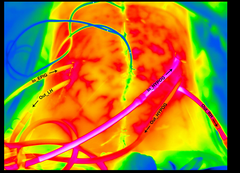

Display both the head and tail of a dataframe or tibble
Source:R/tar_headtail.R
tar_head_tail.RdThis function returns the first `nh` = n head and last `nt` = n tail rows of a dataframe or tibble. Row numbers from the original data are preserved as row names in the result.
Value
A dataframe composed of the first `nh` and last `nt` rows of the input data. The row numbers from the original data are used as row names in the result.
Examples
# \donttest{
if(interactive()){
# Generate example data
df <- data.frame(A = 1:10, B = 11:20)
tar_head_tail(df, nh = 3, nt = 2)
}
# }